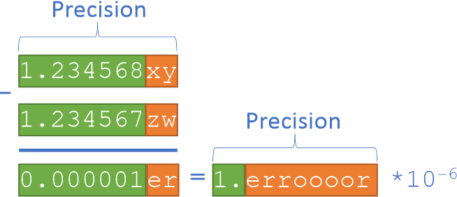

Programming with Data Parallel Extensions for Python¶
{kind=link}
Data Parallel Extensions for Python consist of three foundational packages:
The Numpy*-like library,
dpnp;The compiler extension for Numba*,
numba-dpexThe library for managing devices, queues, and heterogeneous data,
dpctl.
Their underlying implementation is based on SYCL* standard, which is a cross-platform abstraction layer for heterogeneous computing on data parallel devices, such as CPU, GPU, or domain-specific accelerators.
Scalars vs. 0-Dimensional Arrays¶
Primitive types, such as Python’s and Numpy’s float, int, or complex, used to represent scalars,
have the host storage. In contrast, dpctl.tensor.usm_ndarray and dpnp.ndarray have the USM storage
and carry associated allocation queue. For the Compute-Follows-Data consistent behavior
all dpnp operations that produce scalars will instead produce respective 0-dimensional arrays.
That implies, that some code changes may be needed to replace scalar math operations with respective
dpnp array operations. See Data Parallel Extension for Numpy* - API Reference section for details.
Data Parallel Extension for Numpy - dpnp¶
The dpnp library is a bare minimum to start programming numerical codes for data-parallel devices.
If you already have a Python script written in Numpy*, then running it on a GPU will typically require
changing just a few lines of the code:
import dpnp as np
x = np.asarray([1, 2, 3])
print("Array x allocated on the device:", x.device)
y = np.sum(x)
print("Result y is located on the device:", y.device) # The same device as x
print("Shape of y is:", y.shape) # 0-dimensional array
print("y=", y) # Expect 6
In this example, np.asarray() creates an array on the default SYCL* device, which is a "gpu" on systems
with integrated or discrete GPU (it is the "host" on systems that do not have GPU).
The queue associated with this array is now carried with x, and np.sum(x) derives it from x,
and respective pre-compiled kernel implementing np.sum() is submitted to that queue.
The result y is allocated on the device 0-dimensional array associated with that queue too.
All dpnp array creation routines and random number generators have additional optional keyword arguments:
device, queue, and usm_type, using which you can explicitly specify on which device or queue you want
the tensor data to be created along with the USM memory type to be used ("host", "device", or "shared").
In the following example, the array x is created on the GPU device, and reduction sum is done on it:
import dpnp as np
x = np.empty(3)
try:
x = np.asarray([1, 2, 3], device="gpu")
except:
print("GPU device is not available")
print("Array x allocated on the device:", x.device)
y = np.sum(x)
print("Result y is located on the device:", y.device) # The same device as x
print("Shape of y is:", y.shape) # 0-dimensional array
print("y=", y) # Expect 6
Data Parallel Extension for Numba - numba-dpex¶
Numba* is a powerful Just-In-Time (JIT) compiler that works best on Numpy* arrays, Numpy* functions, and loops.
Data-parallel loops is where the data parallelism resides. It allows leveraging all available CPU cores,
SIMD instructions, and schedules those in a way that exploits maximum instruction-level parallelism.
The numba-dpex extension allows to compile and offload data-parallel regions to any data parallel device.
It takes just a few lines to modify your CPU Numba* script to run on GPU:
import dpnp as np
from numba_dpex import dpjit as njit
@njit()
def sum_it(x): # Device queue is inferred from x. The kernel is submitted to that queue
return np.sum(x)
x = np.empty(3)
try:
x = np.asarray([1, 2, 3], device="gpu")
except:
print("GPU device is not available")
print("Array x allocated on the device:", x.device)
y = sum_it(x)
print("Result y is located on the device:", y.device) # The same device as x
print("Shape of y is:", y.shape) # 0-dimensional array
print("y=", y) # Expect 6
In this example, you can see a custom function sum_it() that takes an array input. By compiling it with
Data Parallel Extension for Numba*, the queue information is derived from input argument x,
which is associated with the default device ("gpu" on systems with integrated or discrete GPU) and
dynamically compiles the kernel submitted to that queue. The result resides as a 0-dimensional array on the device
associated with the queue, and on exit from the offload kernel it will be assigned to the tensor y.
Data Parallel Control - dpctl¶
Both dpnp and numba-dpex provide enough API versatility for programming data parallel devices but
there are some situations when you need to use dpctl advanced capabilities:
Advanced device management. Both
dpnpandnumba-dpexsupport Numpy array creation routines with additional parameters that specify the device on which the data is allocated and the type of memory to be used ("device","host", or"shared"). However, if you need some more advanced device and data management capabilities, you need to importdpctlin addition todpnpand/ornumba-dpex.One of frequent usages of
dpctlis to query the list devices present on the system, available driver backend (such as"opencl","level_zero","cuda", etc.)Another frequent usage is the creation of additional queues for the purpose of profiling or choosing an out-of-order execution of offload kernels.
import dpctl
dpctl.lsplatform() # Print platform information
print("GPU devices:", dpctl.get_devices(device_type="gpu")) # Get the list of all GPU devices
print("Number of GPU devices", dpctl.get_num_devices(device_type="gpu")) # Get the number of GPU devices
print("Has CPU devices?", dpctl.has_cpu_devices()) # Check if there are CPU devices
Cross-platform development using Python Array API standard. If you program Numpy-like codes and target different hardware vendors and different tensor implementations, then going with Python* Array API Standard is a good choice for writing a portable Numpy-like code. The
dpctl.tensorimplements Python* Array API Standard for SYCL* devices. Accompanied with respective SYCL device, driver from different vendors,dpctl.tensorbecomes a portable solution for writing numerical codes for any SYCL device.For example, some Python communities, such as Scikit-Learn* community, are already establishing a path for having algorithms (re-)implemented using Python* Array API Standard . This is a reliable path for extending their capabilities beyond CPU only, or beyond certain GPU vendor only.
Zero-copy data exchange between tensor implementations. Certain Python projects may have their tensor implementations not relying on
dpctl.tensorordpnp.ndarraytensors. However, you can still exchange data between these tensors not copying it back and forth through the host. Python* Array API Standard specifies the data exchange protocol for zero-copy exchange between tensors throughdlpack. Being the Python* Array API Standard implementationdpctlprovidesdpctl.tensor.from_dlpack()function used for zero-copy view of another tensor input.
Debugging and Profiling Data Parallel Extensions for Python¶
Intel oneAPI Base Toolkit provides two tools to assist programmers to analyze performance issues in programs that use Data Parallel Extensions for Python. They are Intel VTune Profiler and Intel Advisor.
Intel © VTune ™ Profiler examines various performance aspects of a program like, the most time-consuming parts, efficiency of offloaded code, impact of memory sub-systems, etc.
Intel © Advisor ™ provides insights on the performance of offloaded code with respect to the peak performance and memory bandwidth.
Below you can find how to use Intel VTune Profiler and Intel Advisor with heterogenous programs that use Data Parallel Extensions for Python.
Profiling with Intel VTune Profiler¶
Intel © VTune ™ Profiler provides two mechanisms to profile heterogeneous programs targeted to GPUs.
GPU offload
GPU hotspots
The GPU offload analysis profiles the entire application (both GPU and host code) and helps to identify if the application is CPU- or GPU-bound. It provides information on the proportion of the execution time spent in GPU execution. It also provides information about various hotspots in the program. The key goal of the GPU offload analysis is to identify the parts of the program that can benefit from offloading to GPUs.
The GPU hotspots analysis focuses on providing insights into the performance of GPU-offloaded code. It provides insights about the parallelism in the GPU kernel, the efficiency of the kernel, SIMD utilization, and memory latency. It also provides performance data regarding synchronization operations like GPU barriers and atomic operations.
The following instructions are used to execute the two Intel VTune Profiler analyses on programs written using Data Parallel Extensions for Python:
> vtune -collect gpu-offload -r <output_dir> -- python <script>.py <args>
> vtune -collect gpu-hotspots -r <output_dir> -- python <script>.py <args>
Intel VTune Profiler performs dynamic binary analysis on a given program to obtain insights on various performance characteristics. It can run on unmodified binaries with no extra requirements for program compilation. After collecting the data using the above commands, the Intel VTune Profiler GUI can be used to view various performance characteristics. In addition to the GUI, it provides mechanisms to generate reports through the command line and setup a web server for post processing the data.
See Intel VTune Profiler User Guide for more details.
Profiling with Intel Advisor¶
The primary goal of Intel © Advisor is to help you make targeted optimizations by identifying appropriate kernels and characterizing the performance limiting factors. It provides mechanisms to analyze the performance of GPU kernels against the hardware roof-line performance. Intel Advisor gives you information about the maximum achievable performance with the given hardware conditions and helps identify the best kernels for optimization. Further, it helps you to characterize if a GPU kernel is bound by compute capacity or by memory bandwidth.
The following instructions are used to generate GPU roof-line performance graphs using Intel Advisor.
> advisor --collect=roofline --profile-gpu --project-dir=<output_dir> --search-dir src:r=<search_dir> -- <executable> <args>
This command collects the GPU roof-line data from executing the application written using Data Parallel Extensions for Python.
The next command generates the roof-line graph as a HTML file in the output directory:
> advisor --report=roofline --gpu --project-dir=<output_dir> --report-output=<output_dir>/roofline_gpu.html
{kind=link}
The figure above shows the example of roof-line graph generated using Intel Advisor. The X-axis in the graph represents arithmetic intensity and the Y-axis represents performance in GFLOPS. The horizontal lines parallel to the X-axis represent the roof-line compute capacity for the given hardware. The cross-diagonal lines represent the peak memory bandwidth of different layers of the memory hierarchy. The red colored dot corresponds to the executed GPU kernel. The graph shows the performance of the kernel relative to the peak compute capacity and memory bandwidth. It also shows whether the GPU kernel is memory or compute bound depending on the roof-line that is limiting the GPU kernel.
For further details on Intel Advisor and its extended capabilities, refer to the Intel |copy| Advisor User Guide.
Todo
Document debugging section
Writing Robust Numerical Codes for Heterogeneous Computing¶
Default primitive type (dtype) in Numpy* is the double precision (float64), which is supported by
majority of modern CPUs. When it comes to program GPUs and especially specialized accelerators,
the set of supported primitive data types may be limited. For example, certain GPUs may not support
double precision or half-precision. Data Parallel Extensions for Python select default dtype depending on
device’s default type in accordance with Python Array API Standard. It can be either float64 or float32.
It means that unlike traditional Numpy* programming on a CPU, the heterogeneous computing requires
careful management of hardware peculiarities to keep the Python script portable and robust on any device.
There are several hints how to make the numerical code portable and robust.
Sensitivity to Floating-Point Errors¶
Floating-point arithmetic has a finite precision, which implies that only a tiny fraction of real numbers can be represented in floating-point arithmetic. It is almost certain that every floating-point operation induces a rounding error because the result cannot be accurately represented as a floating-point number. The IEEE 754-2019 Standard for Floating-Point Arithmetic sets the upper bound for rounding errors in each arithmetic operation to 0.5 ulp, meaning that each arithmetic operation must be accurate to the last bit of floating-point mantissa, which is an order of \(10^-16\) in double precision and \(10^-7\) in single precision.
In robust numerical codes, these errors tend to accumulate slowly so that single precision is enough to calculate the result accurate to three-five decimal digits.
However, there is a situation known as a catastrophic cancellation, when small accumulated errors result in a significant, or even complete, loss of accuracy. The catastrophic cancellation happens when two close floating-point numbers with small rounding errors are subtracted. As a result the original rounding errors amplify by the number of identical leading digits:
{kind=link}
In the example above, green digits are accurate digits, a few trailing digits in red are inaccurate due to induced errors. As a result of subtraction, only one accurate digit remains.
Situations with catastrophic cancellations must be carefully handled. An example where catastrophic cancellation happens naturally is the numeric differentiation, where two close numbers are subtracted to approximate the derivative:
Smaller you take \(\delta\) is greater the catastrophic cancellation. At the same time, bigger \(\delta\) results in bigger approximation error. Books on numerical computing and floating-point arithmetic discuss variety of technics to make catastrophic cancellations controllable. For more details about floating-point arithmetic, refer to IEEE 754-2019 Standard for Floating-Point Arithmetic and the article by David Goldberg, What every computer scientist should know about floating-point arithmetic.
Switching Between Single and Double Precision¶
Implement your code to switch easily between single and double precision in a controlled fashion. For example, implement a utility function or introduce a constant that selects
dtypefor the rest of the Numpy* code.Run your code on a representative set of inputs in single and double precisions. Observe sensitivity of computed results to the switching between single and double precisions. If results remain identical to three-five digits for different inputs, it is a good sign that your code is not sensitive to floating-point errors.
Write your code with catastrophic cancellations in mind. These blocks of code will require special care such as the use of extended precision or other techniques to control cancellations. It is likely that this part of the code requires a hardware specific implementation.